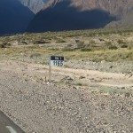
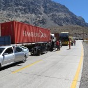
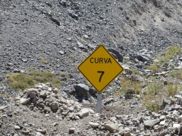
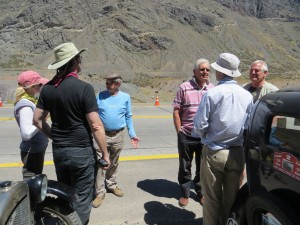
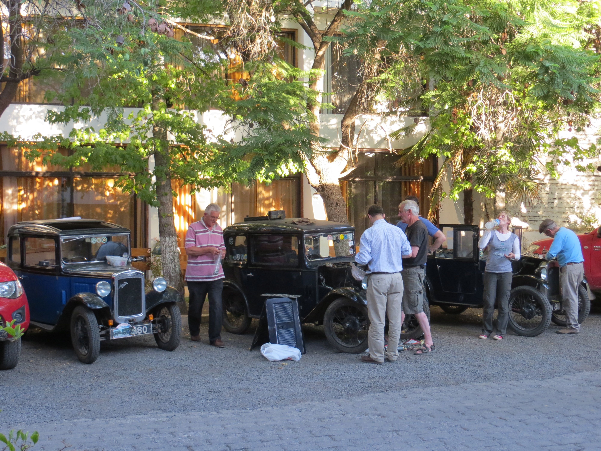

25th February Uspallata
Our short journey to Uspallata was a pleasant run around the range of mountains between Mendoza and Acongagua, the highest peak in South America. As the Andes came into view we were awed by the snow-covered heights and the shear bulk of the range. Unused to the sight of mountains, I found it hard to keep my attention on navigating and the car, my eyes being drawn back to the majesty of the Andes.
Our first tantalising view of Arancagua
We had found accommodation in Uspallata in Cabanas with attached garages. Suffering from slight altitude headaches Amanda and I had a relaxing afternoon stroll and early supper in preparation for the climb to the Portillo Pass.
The garage alongside our cabin at Uspalata
Stan had noticed a leak from the radiator on Dusty and found overnight that the level had dropped by an inch or so, but decided it was ok to continue and check the level regularly during the day.
In the cool morning air we set off, our destination Los Andes in Chile, in between the climb and descent over the mountains. The sun was already fiercely hot in the thin atmosphere at 6690 feet, we had however acclimatised to some extent and the cars seemed to be as sprightly as ever. The climb was mostly gentle gradients with some short passages of 2nd-gear work. We passed ski resorts and Carabinieros posts, stopped for coffee at a quiet climbing-support cabin and watched the now disused railway wounding passage towards the summit.
The early stages of the climb to Uspalata
It was hard to imagine how this would have felt to John Coleman, alone in his chummy, with the road then unimproved and certainly less busy. We were passed by numerous buses and trucks, it is said that up to 1,300 vehicles a day use this route. The stout-hearted little cars continued their steady progress, in places passing lumbering lorries and all the way being cheered by drivers and pedestrians. We climbed 4,300 feet until finally we entered the tunnel that marks the summit at 11,483 feet and began a long descent through a new road tunnel completed since JC’s time, he having passed through the old railway tunnel at a slightly higher altitude.
Arriving at the border crossing we received numerous forms to be completed for the cars and passengers. Swiftly we passed from the Argentine side to the Chilean, only to be sent back on foot to have another, different form filled and stamped, before rejoining the queue on the Chilean side. Examined for illicit fruit, honey and plants we were passed like
Acongagua in the background
parcels from here to there, without apparent reason or organisation, eventually the weight of paperwork being deemed sufficient we were waved through, having been charged a small amount for the effort expended. Another long covered roadway brought us to the top of the 37 curves steeply descending on the Chilean side. Road widening being in progress we were halted for 20 minutes or so waiting for the convoy to be allowed to continue. The long snake of vehicles set off but on the third curve, the road-building gang, clad in orange hi-vis clothing, stepped into the road, placed a barrier of cones and striped tape across the roadway and all movement ceased while they draped themselves over the three cars, demanding that each of us stop and be the centrepiece of photos taken by their colleagues on mobile phones and cameras. The traffic behind us, took all this in good part without a single irritated toot. The ascending construction trucks on the haulage road, blowing their horns and isolated groups of workers, waving shovels and other implements in encouragement we proceeded in regal procession to the last curve, shortly afterwards meeting our Chilean escort at the side of the road.
We had arranged to meet Willie Grondhuis and Daniel Elton-Heavey who who had kindly offered to escort us in Willie’s Triumph Stag into Los Andes. We had a brief fuel stop and then drove to the hotel Willie had booked for us. After a brief conference over a cooling beer at the poolside, we separated to carry out some essential tasks; Stan to remove his radiator for a look-see, Diana and I with Willie to buy tools and spark plugs for the chummy, one having begun to oil up on the last 15kms into town and found to be not working.
Willie had been working his contacts and within an hour Stan had removed the radiator and a motorcycle courier had taken it to a repair shop where the small hole found in the bottom tank was repaired and returned by 18.00. I was able to find a few tools in a ferreteria which will enable me to be somewhat independent for tools (the hire charges from Austin owners being somewhat high in Chile). We were not able to obtain the correct plug but later, when looking for through my spares, I found that I had in error packed extra plugs and the incorrect ones for my car, being 18mm and suitable for the chummy. Stan’s new fan pulley bearing had picked up and this was the probable cause of Dusty’s high engine temperature, making the belt slip and not turning the fan at engine speeds. I had a spare, packed on a whim at the last moment, which will suffice. Daniel very kindly arranged to send on by express bus to Copiapo a new fan pulley bearing he has at home for his own 7, along with a four-bladed fan which Stan will fit to increase air flow.
In the midst of all this frenetic activity a television crew arrived to interview the party and provide a short piece in the following evening’s news slot. Diana modified the plugs to shorten the thread length with my newly -purchased file and Stan refitted the radiator. By 20.30 we had finished, Diana had smashed her finger when a spanner slipped and we walked to a nearby Chinese restaurant for an excellent dinner with Willie, who told us all about life in Los Andes for an emigrant Dutchman, now 30 years in Chile.


{kind=link}
{kind=link}
{kind=link}
{kind=link}
{kind=link}
{kind=link}
{kind=link}
{kind=link}
{kind=link}
{kind=link}
{kind=link}
{kind=link}
{kind=link}
{kind=link}
{kind=link}
Great Blog and fantastic pictures. You are all doing really well and that includes the cars. Seem to remember radiator problems in Russia, Stan. Look forward to hearing more of your adventure. Bon Voyage, Johny J.
On http://www.automovilsport.com I posted your travels, there was an instant reply that tells us all he spoke to you and knows you are in Coquimbo. So this is getting like CNN with breaking news. Must remember to put in a prayer for that oiled up plug tonight before I fall asleep. Can’t belive the crossing of the Andes was so easy.
Hip hip hurray
Looking good, guys. Thinking of you as we shiver in the South Shropshire winter.
Great to catch up with you guys from sunny Scotland (that’s true) but even our mountains don’t match the Andes. It sounds a fantastic trip and so different from the Pekin to Paris but here’s hoping equally successful. Will keep in touch
Michael
Awsome mountains but very exciting. How is the Malbec? As you are in the region, it might be a good idea to splash out and taste the very best. No chance of a vineyard visit while there.?
How is the finger Diana. I hope you took some Zambuk with you.
Love Mummy
I am following your journey (of course). Beautiful untill now. Keep enjoying!!!!
Great to meet yourselves in Antofagasta the other day in the hotel carpark and thanks for your time in explaining your mission probably well over the 1000’th time. We both wish yourselves the best in your journey. In our few months in Chile have come to admire them for quite some amazing mechanical ability in getting things going that in our current time would just be thrown away. I suspect that same spirit is the same with your fantastic cars. The other advantage is that you can get at the engine! I hope you avoid any more sand on your head gasket. Will continue to read your updates with interest.
You are making great progress let it continue so. Thanks for all the interesting News and beautiful pictures – looking forward to the next episode. All best wishes, Steve
Well done so far! Sounds as if you have got off to a great start – long may it continue!
At last can make contact with you all in transit to Manila then to shaghi in China next week.the radiator problem experienced by stan is typical of a tight yorkshireman he was to get that fixed 5 years ago!! But glad you are all well and safe and cars performing on top form by austin seven standards!! Catch all later chris Queen Victoria
Jack – I am impressed by the spares you keep finding in the depths of your storage box. Not nearly as many plumbing widgets as I have unearthed after 34 years in the Marston Road emporium of course. I blame most of it on DH.
Most of them sold to someone with more money than sense.
Rather wish I was with you all and keep overtaking those trucks!
Glad to hear you are well on your way. Maybe we will see you in Dallas..
Enjoying the updates. I’m a bit worried that we haven’t had one for a while – There must be a monster essay on the way. Never mind Diane’s spanner-smashed finger, I’m worried for Jack’s typing digit. Best wishes to all the team.